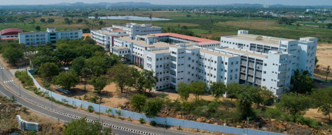
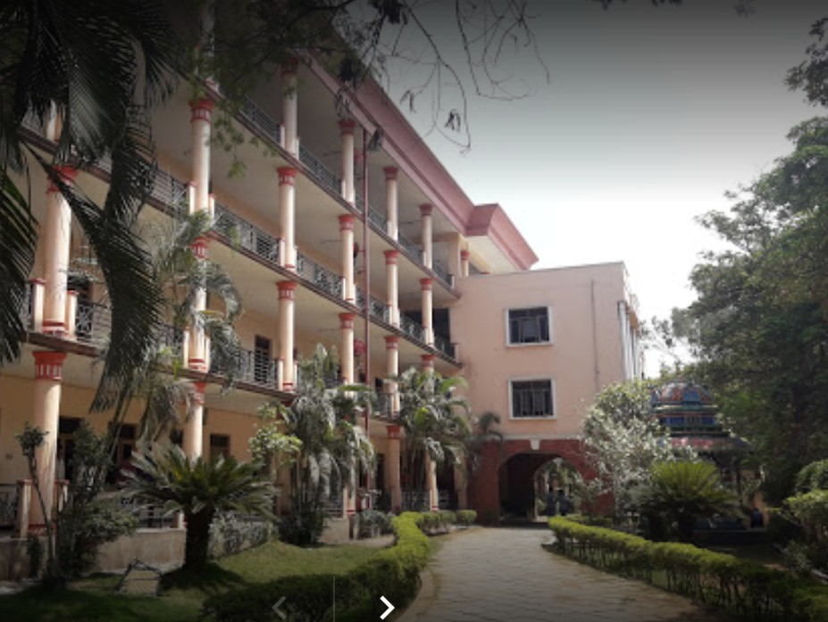
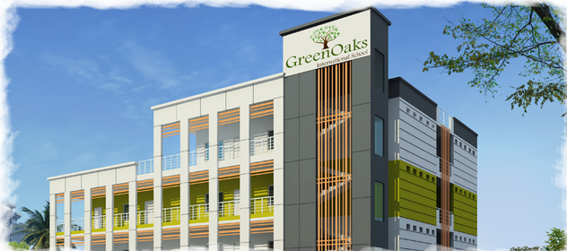

 I am pursuing B-TECH SoftwareEngineering course from Anurag University. that is located at ghatkesar, hyderabad ,Telangane.
It is the top Private University in Telangana offering multi-disciplinary courses in Engineering, Agricultural Sciences, Pharmacy, Management, Liberal Arts, Medical Sciences and Nursing. VISION: To be a leading university that provides transformative education and research to create leaders and innovators of tomorrow and to expand frontiers of knowledge for the betterment of society. MISSION: To prepare students to think creatively, broadly, critically and create an ecosystem for innovation and entrepreneurship from which the leaders and innovators of tomorrow emerge.
 I completed my +2 from Sri Chaitanya junior college. it has diffrent course and sections they prepain us for IIT and JEE examination this insitute has a good results , they provide weekly exam on jee and Engineering topics overall good insitution for emcet preparatioln

I did my schooling from